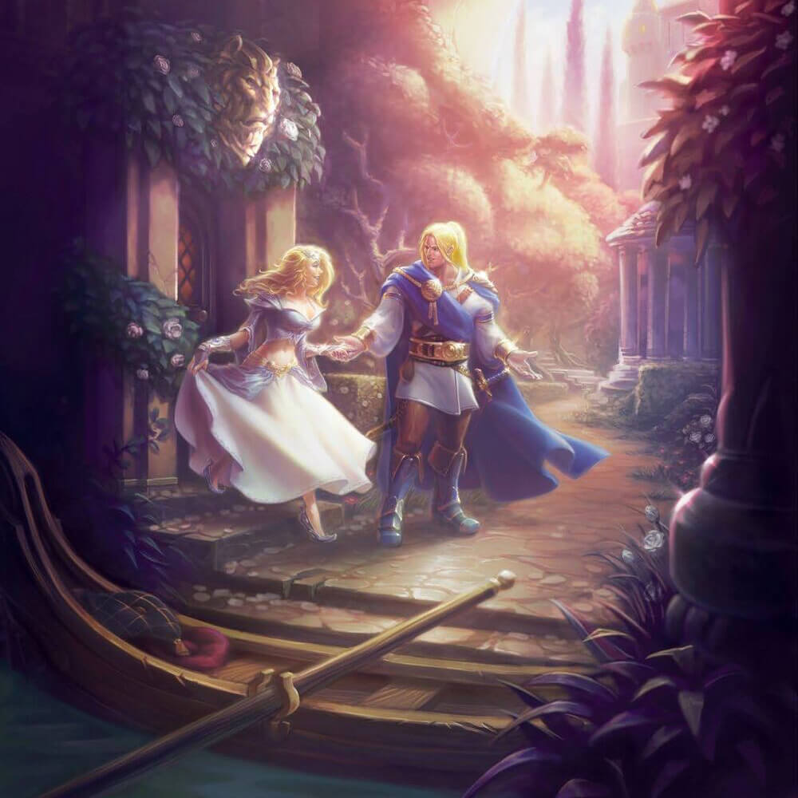
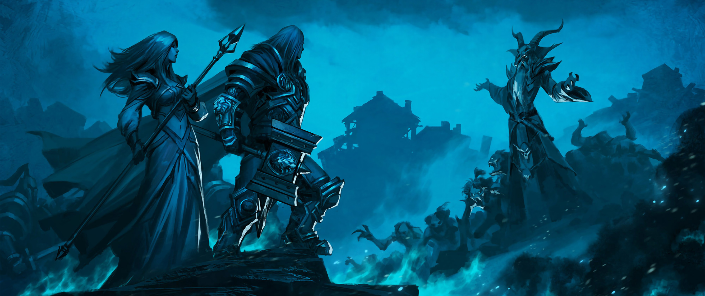
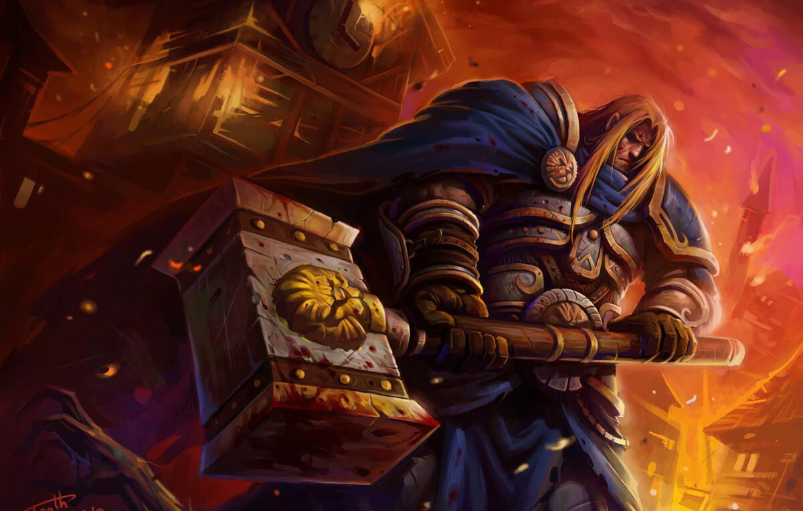
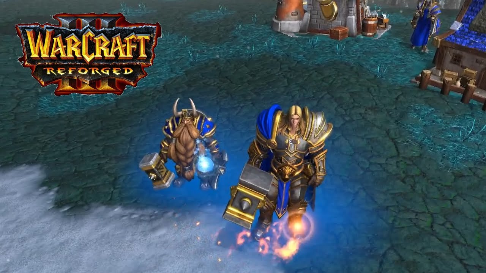
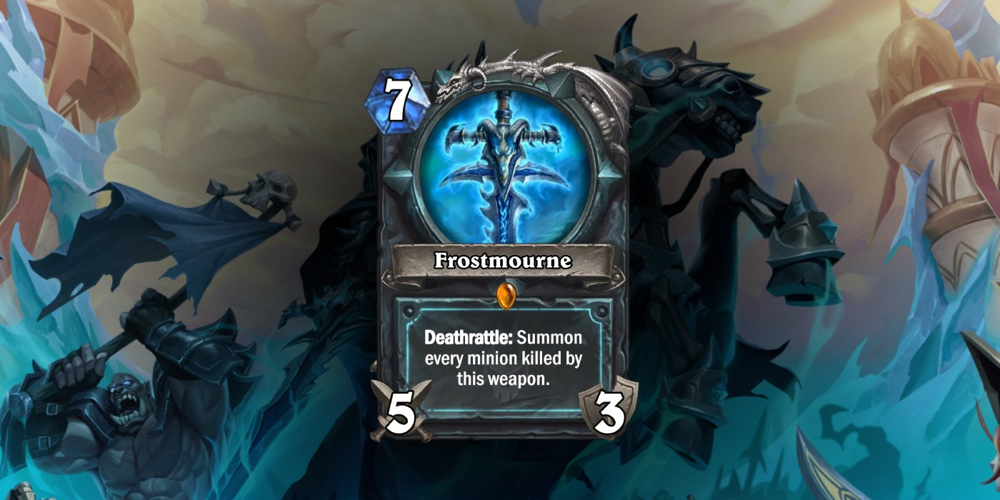

A bukás előtt
Fiatal kora
Arthas Menethil herceg Lordaeron-ban született II. Terenas Menethil és Lianne Menethil fiaként, négy évvel az Első Háború előtt. A fiatal herceg olyan időben nőtt fel, mikor Azeroth-on háború pusztított, a Szövetség összeomlóban volt és még sötétebb felhők gyülekeztek az égen. Kisgyerekként legjobb barátja Varian Wrynn volt, akivel sokat küzdött, bár mindig alulmaradt. A híres lova, Invincible is vele együtt nőtt fel. A csatákra Muradin Bronzebeard készítette fel, aki a törpkirály, Magni Bronzebeard testvére volt. A Fény használatára pedig Uther the Lightbringer tanította meg. Tanulmányait Dalaranban folytatta, ahol megismerkedett későbbi szerelmével, Jaina Proudmoore-al. Itt látta, hogy apja, II. Terenas Menethil király esküvőt szervez nővérének, Caliának, akinek politikai okokból kell összeházasodnia Daval Prestor-ral (ismertebb nevén Deathwing-gel). Calia borzasztóan mérges volt és remélte, hogy Arthas majd szerelemből és nem politikából házasodhat. Már 19 évesen bekerült a Silver Hand lovagrendbe. Beiktatására Stormwind városában került sor, az eseményre több uralkodó és híres varázsló is érkezett. Arthas itt kapta meg fegyverét, a Light's Vengeance-t. Meglátogatta az új királyt is, aki gyerekkori legjobb barátja, Varian Wrynn volt, akinek éppen akkor született meg gyermeke, Anduin Wrynn. Egyik útja során kedvelt lova, Invincible balesetet szenvedett, hogy szenvedésének véget vessen végeznie kellett lovával. Ez a tette élete végéig kísértette őt. Később Arthas ismét visszatért Dalaranba, hogy több időt tölthessen Jainával. Ott léte során Antonidas megszervezett egy lakomát Arthas és Kael'thas számára. Az eseményen Arthas és Antonidas nagyon sok mindent átbeszéltek. Arthas egy erős, magabiztos fiatalemberré vált, de emellett makacs és arrogáns is volt, bár senki sem tagadhatta bátorságát és kitartását. Arthas-t az egyik legjobb kardforgatónak tartották Lordaeron-ban, és híressé vált, amikor ellentámadást indított az erdei trollok ellen és legyőzte őket Zul'Aman-ban. Később Arthas meghívta Jainát Lordaeron-ba, hogy együtt ünnepelhessék a húsvéti és a halloween-i fesztiválokat. Azonban később Arthas megkérdőjelezte, hogy valóban összeillenek-e Jainával. Arthas hirtelen véget vetett a kapcsolatuknak, hogy Jaina a varázslásra koncentrálhasson Dalaranban, Arthas pedig teljesíthesse kötelezettségeit Lordaeron-ban.Tirion Fordring tárgyalásán Stratholme városában Arthas a négy esküdt egyikeként vett részt. Akárcsak a többiek, ő is teljesen ledöbbent, mikor Tirion beismerte bűnét, melynek következtében a nagy Paladin harcost kiközösítették és száműzték.
Pestis
Aggasztó hírek érkeztek. Az orkok kitörtek az internálótáboraikból, az északi tájakon pedig egy újfajta pestis ütötte fel a fejét. Arthas-t és Uther-t elküldték Strahnbradba, hogy megvédjék a várost az elszabadult ork hordáktól. A fiatal herceg legyőzte a fekete sárkány Searinoxot és elvitte a szivét Feranor Steeltoe törpnek, aki létrehozta belőle az Orb of Fire-t. Arthas ezt a varázslatos eszközt arra használta, hogy legyőzze az orkokat és megölje a Blackrock klán vezérét. Arthas 24 éves korában az élőhalott pestis terjedésnek indult. Jainával és Falric kapitánnyal közösen küzdöttek az élőhalottak ellen és vizsgálták a megfertőzött gabonát, amikor találkoztak a halottidéző Kel'Thuzaddal Brill városában, akit egészen Andorhalig üldöztek.Kel'Thuzad már megfertőzte az ott tárolt gabonát és a hajószállítmányok már útnak indultak távoli falvakba. Mielőtt Arthas végzett volna vele, Kel'Thuzad elárulta, hogy egy démon, Mal'Ganis vezeti a Scourge-ot (élőhalott hadsereg). Jaina és Arthas elutazott északra, hogy végezzenek vele Stratholme-ban. Útközben megpihentek Hearthglenben, legalábbis szerettek volna. Ott azonban figyelmeztették őket, hogy egy hatalmas élőhalott sereg közeleg. Arthas megparancsolta Jainának, hogy találja meg Uthert és kérje a segítségét, miközben ő védi a várost. Ezalatt felfedezte, hogy ez a pestis nem csupán egyfajta tömeggyilkosság, hanem az ártatlan városlakókat élőhalott lényekké alakítja át. Arthas és csapatai már vesztésre álltak, amikor Uther érősítéssel együtt megérkezett és megmentették a falut. Továbbindultak Stratholme felé, miközben találkoztak Medivh-el a prófétával. Ugyanazt a tanácsot adta neki, mint apjának - utazzona nyugatra, Kalimdorba, mert ha itt harcol az élőhalottakkal, azzal csak elősegíti Lordaeron bukását. Arthas azonban maradt, mert itt volt a népe és ígéretett tett, hogy semmiképpen sem hagyja el őket. Bár Jaina úgy gondolta a prófétának igaza lehet, Arthas nem hallgatott rá és folytatta útját Stratholme-ba.
Stratholme
Sajnos túl későn értek oda. Stratholme lakosai már megették a gabonát és hamarosan a pestis áldozataivá váltak. Arthas azt javasolta, hogy öljék meg a stratholme-i embereket mielőtt előhalottakká váltak volna. Jaina elszörnyedt az ötlettől és Uther azonnal elutasította, hogy ilyen barbár tevékenységben részt venne, még akkor sem, ha Arthas már király lenne. Arthas kihirdette, hogy Uther árulást követett el és felmentette a szolgálat alól. Utherrel több katona is távozott, de akik maradtak segítettek Arthas-nak kivégezni a megfertőzött városlakókat, akik nagyjából 25 000-en lehettek. A vérontás közepette találkoztak Mal'Ganis-szal, aki azon munkálkodott, hogy megszerezze a városlakók lelkeit, de Arthas végzett velük, mielőtt a hatalmas démon megkaparinthatta volna a lelkeket. Arthas egy végső összecsapást akart Mal'Ganis-szal, aki végül elmenekült, de előtte megígérte, hogy Northrenden majd találkoznak. Arthas ezt követően felgyújtotta a várost, mely lángok a mai napig is égnek.
Northrend
Arthas és csapatai elindultak Northrendre Mal'Ganis-t keresve, de hamarosan támadás érte őket. Szerencsére gyorsan kiderült, hogy a rájuk támadt törpök a barátaik. Arthas alig hitt a szemének, amikor barátját és egykori mentorát, Muradin Bronzebeard-et megpillantotta. Muradin először azt hitte, hogy értük jöttek, mert már nem bírtak el az élőholtakkal, miközben a Frostmourne-t keresték, de Arthas tudatta vele, hogy merő véletlen volt találkozásuk. Összefogtak és a közeli élőhalott csapatokat kivégezték. Hamarosan egy küldöttség érkezett Lordaeron-ból léghajóval. Azt a parancsot kapták Uther-től és Terenas királytól, hogy Arthas és serege azonnal térjen vissza. Arthas-nak esze ágában sem volt hazatérnie, amíg Mal'Ganis-t el nem pusztította, de a csapatai már elindultak a hajók felé. Néhány zsoldost azonban megkért, hogy gyújtsák fel a hajóikat, mielőtt odaérnek. A terv sikerült, a helyi zsoldosok gyorsabban értek a hajókhoz, mint Arthas emberei és felgyújtották a hajókat. Azonban mire Arthas serege is odaért a hajókhoz, a herceg elárulta a zsoldosokat és megvádolta őket azzal, hogy felgyújtották a hajóikat. Ezért kivégezték a zsoldosokat, amit Muradin egyébként ellenzett. Arthas ezt követően elmondta az embereinek, hogy nem tudnak hazajutni és csak egy módon hagyhatják el Northrendet: Győzelemmel!
Frostmourne

Végül előrenyomultak egészen Draktharon Keep-ig (a jeges trollok
erődje), ahol végre megjelent Mal'Ganis és megjósolta Arthas
halálát. Ezt követően Arthas Muradinnal együtt útnak indult
megkeresni a Frostmourne-t.Egy ősi átjáró segítségével a híres penge
közelébe értek, ahol egy őrző várta Arthas-t és figyelmeztette, hogy
ne menjen a Frostmourne közelébe a saját érdekében. Az őrző
elbukott, Arthas és Muradin megszerezhették jutalmukat. Muradin
talált egy feliratot, miszerint a penge átkozott volt. Könyörgött
Arthas-nak, hogy felejtse el bosszúvágyát és vezesse az embereit
haza, de Arthas hajthatatlan volt. Megkérte a barlang szellemeit,
hogy engedjék szabadjára a kardot jeges börtönéből és kijelentette,
hogy bármit megad, ha segítenek megvédeni az embereit. A fegyver
kiszabadult, Muradint pedig eltalálta egy jégdarab, amitől
eszméletét vesztette. Arthas segíteni akart neki, de a fejében már
hallotta a Frostmourne hívószavát, ezért inkább eldobta fegyverét,
felvette a Frostmourne-t, Muradint ott hagyta meghalni és visszatért
a táborba. A Frostmourne-nal a kezében könnyedén legyőzte Mal'Ganis
seregét, és bázisát is, végül pedig megküzdött a démonnal. Mal'Ganis
elárulta, hogy a hangok, amiket hall, az a Lich King hangja és
megkérdezte, hogy mit mond neki. Arthas válaszolt, hogy a hang arra
utasítja, hogy végezzen Mal'Ganis-szal, ami rendesen meglepte a
démont. Miután végzett vele, Arthas elmenekült még északabbra,
csapatait pedig magukra hagyta. Arról nem volt tudomása, hogy
Mal'Ganis valójában túlélte az összecsapásukat, a Frostmourne-tól
pedig hamarosan teljesen elvesztette józan gondolkodását.
Tudj meg többet a Frostmourneról!
Érdekel,hogy mi törént ezután? Tudj meg többet a Bukás utáni időszakról